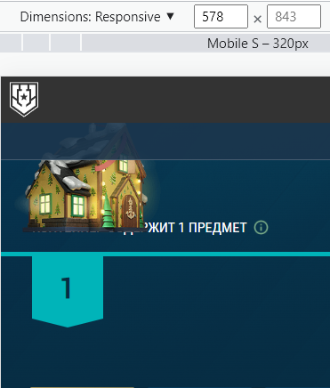

| Ссылка на новость | Какую задачу решает эта новость? | Почему это оформление лучшим образом подходит для этой задачи? |
|---|---|---|
| Activision | В данной новости хорошо структуризирована информация по обновлениям, в определеленную дату, что помогает пользователям с помощью якорных ссылок быстро найти информацию по интересующему дню. Во вторых в каждом из дней есть определенная последовательность излагаемой информации(сначала идут глобальные изменения, а уже потом изменения в определенных режимах в игре), читать такой текст намного приятнее и удобнее, чем просто перечисление обновление. Новость решает задачу донесения пользователям информации по обновлениям. | По оформлению(верстке) все выполнено качественно, заголовки сразу видны, не теряются на общем фоне, так же приятно что есть ссылки на дату обновлений(но можно сделать лучше, добавив изменение ссылки при клике на нее, и при пролистывании разделов). |
| EAgames | В данной новости нет лишней информации, есть человек, есть краткая информация о нем, так же присутствуют цитаты и плюсы сотрудничества компании с ним. Новость доносит до пользователей информацию о новом рекламном лице компании. | Данное оформление наиболее четко преподносит новость. |
| Ubisoft | Задача новости в том что бы пользователи оперативно получили информацию о возможности получить подарки в игре. | Даты проведения ивента выделены, что облегчает процесс запоминания информации, а так же цепляет глаз. |
| Minecraft | Задача новости в том что бы пользователи оперативно получили информацию о дате выхода игры, а так же о доступных изданиях для покупки. | Заголовки выделены(быстро можно найти то что интересует), есть ссылки на страницу игры(не приходится ее искать на сайте), а также ссылки на покупку разных изданий игры. |
| Sega | Задача новости дать пользователям начальный гайд для игры в соника | Благодаря встроенным в страницу видео, пользователи могут не переходя на сторонний сайт, посмотреть их и и наглядно узнать тонкости игры, так же под каждым плеером находится краткое описание что помогает пользователям быстрее ориентироваться. |
Ссылка на новость
Какую задачу решает эта новость?
В данной новости хорошо структуризирована информация по обновлениям, в определеленную дату, что помогает пользователям с помощью якорных ссылок быстро найти информацию по интересующему дню. Во вторых в каждом из дней есть определенная последовательность излагаемой информации(сначала идут глобальные изменения, а уже потом изменения в определенных режимах в игре), читать такой текст намного приятнее и удобнее, чем просто перечисление обновление. Новость решает задачу донесения пользователям информации по обновлениям.
Почему это оформление лучшим образом подходит для этой задачи?
По оформлению(верстке) все выполнено качественно, заголовки сразу видны, не теряются на общем фоне, так же приятно что есть ссылки на дату обновлений(но можно сделать лучше, добавив изменение ссылки при клике на нее, и при пролистывании разделов).
Ссылка на новость
Какую задачу решает эта новость?
В данной новости нет лишней информации, есть человек, есть краткая информация о нем, так же присутствуют цитаты и плюсы сотрудничества компании с ним. Новость доносит до пользователей информацию о новом рекламном лице компании.
Почему это оформление лучшим образом подходит для этой задачи?
Данное оформление наиболее четко преподносит новость.
Ссылка на новость
Какую задачу решает эта новость?
Задача новости в том что бы пользователи оперативно получили информацию о возможности получить подарки в игре.
Почему это оформление лучшим образом подходит для этой задачи?
Даты проведения ивента выделены, что облегчает процесс запоминания информации, а так же цепляет глаз.
Ссылка на новость
Какую задачу решает эта новость?
Задача новости в том что бы пользователи оперативно получили информацию о дате выхода игры, а так же о доступных изданиях для покупки.
Почему это оформление лучшим образом подходит для этой задачи?
Заголовки выделены(быстро можно найти то что интересует), есть ссылки на страницу игры(не приходится ее искать на сайте), а также ссылки на покупку разных изданий игры.
Ссылка на новость
Какую задачу решает эта новость?
Задача новости дать пользователям начальный гайд для игры в соника
Почему это оформление лучшим образом подходит для этой задачи?
Благодаря встроенным в страницу видео, пользователи могут не переходя на сторонний сайт, посмотреть их и и наглядно узнать тонкости игры, так же под каждым плеером находится краткое описание что помогает пользователям быстрее ориентироваться.
Old post
Минусы
- На мобильной и планшетных версиях страницы нет кнопки вернуться в начало статьи
- Нет заголовка перед якорными ссылками в начале статьи
- Кнопка для закрытия статьи может быть случайно нажата пользователям с мобильных устройств и доступна из любого места статьи
- В разделе "Другие изменения" вкладки никак не оформлены
Плюсы
- Указан размер загружаемого контента
New post
Минусы
- На мобильной и планшетных версиях страницы нет кнопки вернуться в начало статьи
- Не указан размер нового загружаемого контента
- Кнопка для закрытия статьи может быть случайно нажата пользователям с мобильных устройств и доступна из любого места статьи
- Нет адаптации во вкладке "Празднование нового года", а в частности картинки контейнеров в виде домов наезжают на текст "Контейнер содержит 1 предмет"
Плюсы
- Присутствует заголовок перед якорными ссылками в начале статьи
- Разделы статьи объеденены в аккордеон
Результаты
В целом улучшения видно невооруженным взглядом, однако есть моменты которые необходимо поправить. Например слайдерам со скриншотами можно сделать адаптивную ширину скриншотов, и добавить кнопки для пролистывания. Так же размер обновления играет ключевую роль для пользователей со слабым железом, и лучше такую информацию узнать сразу. Так же необходимо больше времени уделять тестированию адаптивности на разных устройствах(скриншот для примера).
| Ошибки | Как можно улучшить | Эффект от улучшения |
|---|---|---|
| Заголовок на мобильной версии не имеет безопасной зоны (приклеивается к границам экрана) | Добавить падинги | Более читаемый и аккуратный текст |
| На мобильной версии нет возможности посмотреть краткую статистику по нациям | Добавить аккордеон, стилизовать его под флаги наций в игре | Более информативно |
| Галерея сражений (Фотографии не адаптируются под разные мобильные разрешения) | Сделать слайдер на котором будут кнопки подсказывающие пользовательям о наличии еще фотографий | Аккуратность, понятливость |
Ошибки
Заголовок на мобильной версии не имеет безопасной зоны
(приклеивается к границам экрана)
Как можно улучшить
Добавить падинги
Эффект от улучшения
Более читаемый и аккуратный текст
Ошибки
На мобильной версии нет возможности посмотреть краткую статистику по нациям
Как можно улучшить
Добавить аккордеон, стилизовать его под флаги наций в игре
Эффект от улучшения
Более информативно
Ошибки
Галерея сражений (Фотографии не адаптируются под разные мобильные разрешения)
Как можно улучшить
Сделать слайдер на котором будут кнопки подсказывающие пользовательям о наличии еще фотографий
Эффект от улучшения
Аккуратность, понятливость
Играть еще!